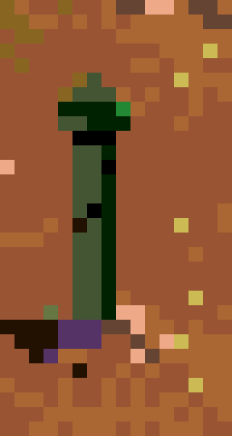
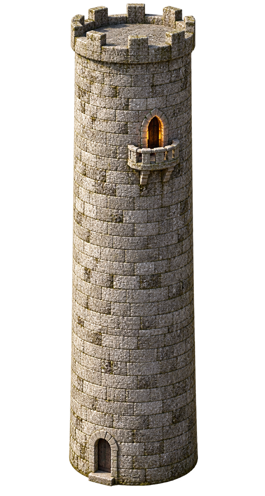
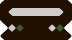
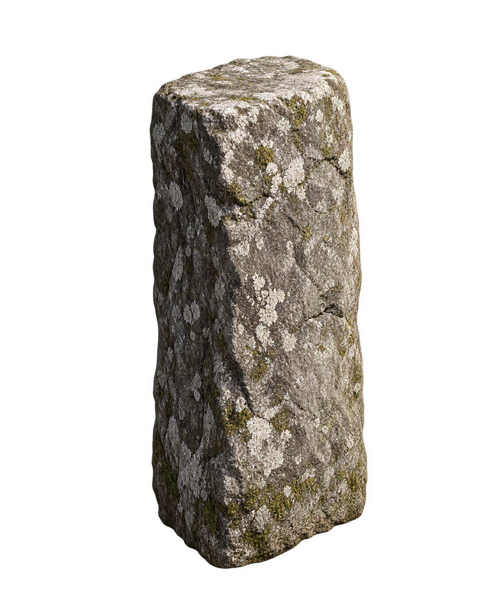
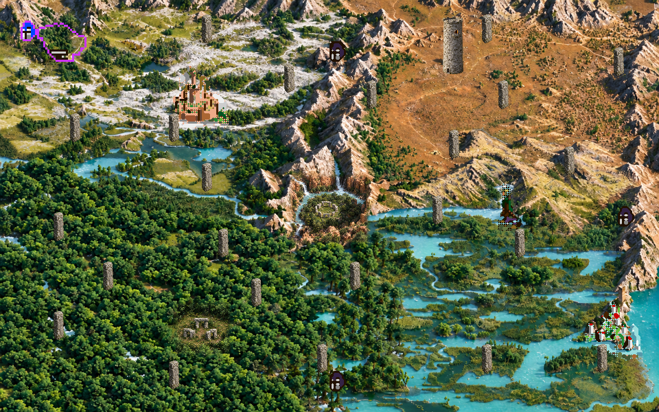

Brukerretting 11. oktober 2026. Tårnet har loddrette runde vegger og brystning. De 23 vannrette stedsmarkørene får samme enkle oppreiste Stonehenge-steinsøyle.





Rastermasterne over er generatorbilder. Kartet er tatt fra spillet etter integrasjon. Kontroller i verification dokumenterer at hvert bilde tegnes, at endret originalstatus beholder originalgrafikk, og at figurer foran søylen beskyttes.